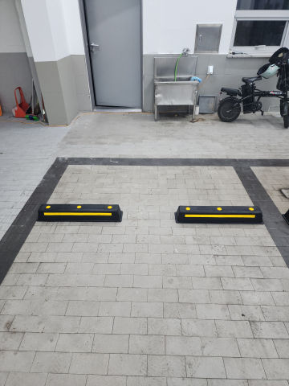

카스토퍼 / WORK CASE
주차장 카스토퍼·주차블럭 파손 교체
후진 충격으로 본체와 고정부가 이탈한 카스토퍼를 철거하고 새 제품을 설치한 사례입니다.콘크리트·아스콘 등 바닥 재질에 맞는 고정 방법을 적용합니다.
수원시 권선구 세류동 카스토퍼 작업은 현장 사진과 바닥·고정부 상태를 먼저 확인합니다. 주차면의 정지 위치를 잡아주는 카스토퍼·주차블럭을 신규 설치하거나 파손·이탈 제품을 철거 후 교체합니다. 합성고무, 스틸, 승용차용·트럭용 등 제품과 콘크리트·아스콘 바닥 조건에 따라 고정 방법을 달리합니다. 1개·소량 시공부터 기존 제품 철거, 작업 후 발생하는 폐기물 처리까지 함께 상담할 수 있습니다.

볼라드·차선규제봉·반사경·카스토퍼 등
실제 설치·교체 전후 현장을 함께 확인해 보세요.
후진 충격으로 본체와 고정부가 이탈한 카스토퍼를 철거하고 새 제품을 설치한 사례입니다.콘크리트·아스콘 등 바닥 재질에 맞는 고정 방법을 적용합니다.


지게차·차량에 눌린 규제봉을 부분 철거하고 새 제품을 설치한 사례입니다.베이스와 앙카가 손상됐는지 확인한 뒤 재사용 또는 교체 여부를 판단합니다.


파인 포장면을 정리하고 보수재를 채운 뒤 다짐과 평탄 작업을 진행한 사례입니다.반복 파손 여부와 하부 침하 가능성도 확인합니다.


지정 주차면의 무단주차를 줄이기 위해 접이식 주차금지봉을 설치한 사례입니다.접었을 때 차량 간섭과 바닥 고정 상태를 함께 봅니다.


차량 접촉으로 깨진 주차장 반사경을 철거하고새 반사경을 설치한 사례입니다.브라켓·지주 상태와 실제 시야각을 함께 확인해 사각지대 해소와 접촉사고 예방에 맞춰 설치 위치를 잡습니다.


차량 충돌로 꺾이거나 훼손된 기존 볼라드를 철거하고 새 제품으로 교체한 사례입니다.제품뿐 아니라 기존 고정부와 바닥 손상을 함께 확인해 재설치 범위를 정합니다.


파손된 고무 차량진입판을 철거하고 출입구 단차와 통행 폭에 맞춰 교체하는 작업입니다.기존 자재와 작업 폐기물 정리까지 범위를 함께 잡을 수 있습니다.


현장 안내가 필요한 위치에 지주형 표지판을 설치한 사례입니다.앙카식·매립식 등 바닥 조건에 맞는 고정 방식을 선택합니다.


들뜨고 손상된 미끄럼방지 자재를 제거한 뒤 계단 바탕을 정리하고논슬립패드를 다시 설치한 사례입니다.


찢어지고 들뜬 기존 코너가드를 제거하고 새 보호대를 설치한 사례입니다.기둥 바탕과 접착 상태를 확인해 재고정합니다.
같은 현장의 다른 시설물 작업도 함께 확인할 수 있습니다.
제품 종류와 설치 상태를 사진으로 먼저 확인하면 작업 범위를 정하는 데 도움이 됩니다.
일반 승용차 주차면인지, 화물차나 대형차가 들어오는 곳인지부터 봅니다.합성고무와 스틸 제품은 충격감과 내구성, 고정 방식이 달라 현장 사용 조건에 맞춰 선택합니다.기존 카스토퍼가 있으면 규격과 설치 간격도 같이 맞춰 봅니다.
현장에서는 같은 종류의 주차 위치 제한 시설을 여러 이름으로 부르는 경우가 많습니다.검색어는 달라도 실제 제품은 길이와 높이, 재질이 다르기 때문에 사진과 규격을 보고 구분합니다.
콘크리트는 바닥 강도가 일정한 편이라 제품에 맞는 앙카를 사용해 고정할 수 있습니다.아스콘은 포장 두께와 하부 상태에 따라 더 깊은 고정부재나 다른 방식이 필요할 수 있습니다.같은 앙카를 모든 바닥에 똑같이 쓰지는 않습니다.
기존 구멍 주변이 단단하면 재사용 가능성을 보지만, 바닥이 깨져 구멍이 커졌다면 그대로 다시 박지 않습니다.제품 상태와 바닥 손상을 보고 위치를 조금 옮기거나 손상 부위를 정리한 뒤 재설치합니다.
파손된 한 개만 골라서 교체하는 소량 작업도 가능합니다.옆 제품과 높이·길이·색상을 맞추려면 기존 카스토퍼 전체가 보이게 사진을 보내주시면 좋습니다.
기존 제품과 앙카를 철거하고 바닥 상태를 본 뒤 새 카스토퍼 설치까지 이어서 진행합니다.작업하면서 나온 기존 주차블럭과 부자재도 수량을 확인해 같이 정리할 수 있습니다.
한쪽이 무조건 더 좋다고 보기보다 사용 장소가 중요합니다.차량 접촉감, 소음, 외관, 파손 빈도와 관리 방법을 보고 현장에 맞는 쪽을 선택합니다.
수원시 권선구 세류동 외에도 같은 시공항목의 다른 지역 페이지를 연결해 두었습니다.
현장 전체, 파손 부위 근접, 바닥·고정부가 보이는 사진과 수량을 보내면 필요한 추가 정보부터 안내합니다.